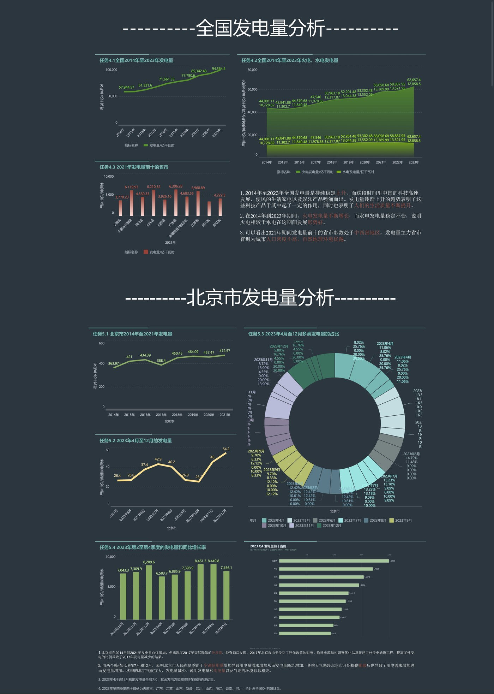

●
POWER GENERATION / DASHBOARD
项目首页
网页版报告
下载仪表板 PDF
GitHub ↗
发电量分析仪表板
全国趋势 · 电源结构 · 区域集中度 · 北京市季节特征｜数据更新：2024-11-04
打开 / 下载 PDF

该页面为仪表板的静态展示版，便于在 GitHub Pages 直接查看。原始 FineBI 工程未随压缩包提供；交互式筛选可在 FineBI 中按
实现说明
复现。